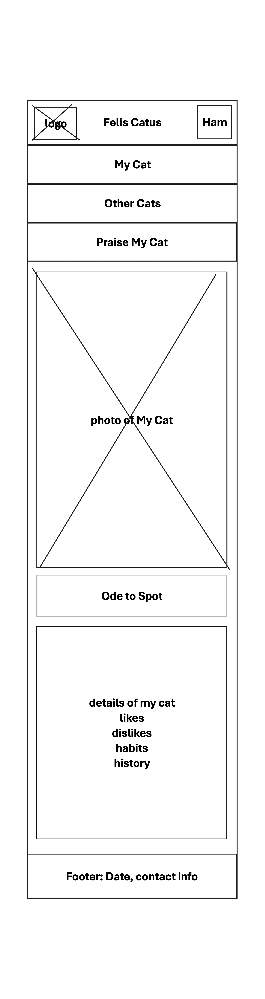
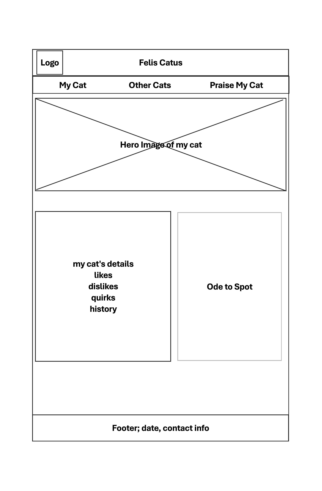

Site Name
The site will be called Felis Catus
Site Purpose
The site will be a satirical parody of people who are obsessed with their cats. It will have info and pictures about my cat, and a hero image of the text of 'Ode to Spot' from Star Trek TNG.
It will also pull several random cat breeds from an api (random at page load and on command) and give semi-personalized reasons why my cat is superior.
Finally it will give users the opportunity to fill out a form detailing the ways they are jealous of my cat, and whether they wish to pet it.
Scenarios:
What kind of a cat does James have?
Is my cat better than his?
...Cat Pictures?
Color Scheme
background: light blue
Secondary background: pastel pink
headers: dark navy blue
Typography
body: Roboto
Wireframe

